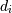

numpy.random.RandomState.randn¶
- RandomState.randn(d0, d1, ..., dn)¶
Return a sample (or samples) from the “standard normal” distribution.
If positive, int_like or int-convertible arguments are provided, randn generates an array of shape (d0, d1, ..., dn), filled with random floats sampled from a univariate “normal” (Gaussian) distribution of mean 0 and variance 1 (if any of the  are floats, they are first converted to integers by truncation). A single float randomly sampled from the distribution is returned if no argument is provided.
This is a convenience function. If you want an interface that takes a tuple as the first argument, use numpy.random.standard_normal instead.
Parameters : d0, d1, ..., dn : int, optional
The dimensions of the returned array, should be all positive. If no argument is given a single Python float is returned.
Returns : Z : ndarray or float
A (d0, d1, ..., dn)-shaped array of floating-point samples from the standard normal distribution, or a single such float if no parameters were supplied.
See also
- random.standard_normal
- Similar, but takes a tuple as its argument.
Notes
For random samples from , use:
sigma * np.random.randn(...) + mu
Examples
>>> np.random.randn() 2.1923875335537315 #random
Two-by-four array of samples from N(3, 6.25):
>>> 2.5 * np.random.randn(2, 4) + 3 array([[-4.49401501, 4.00950034, -1.81814867, 7.29718677], #random [ 0.39924804, 4.68456316, 4.99394529, 4.84057254]]) #random